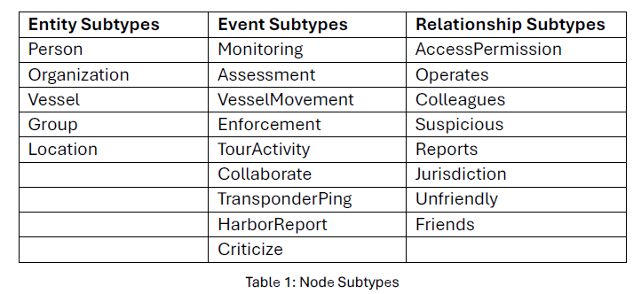
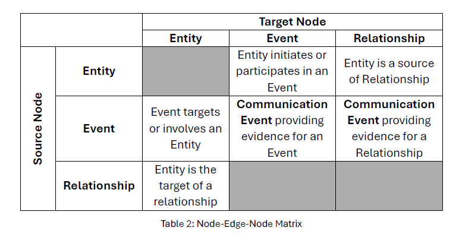
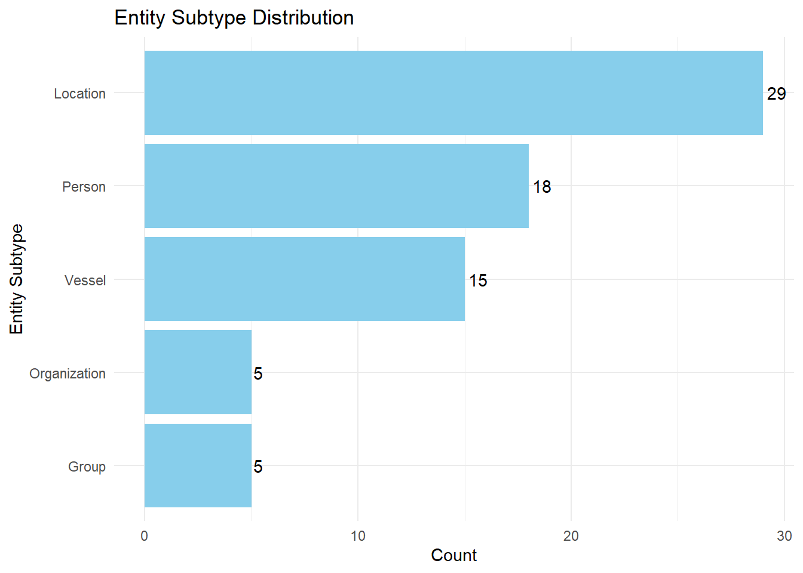
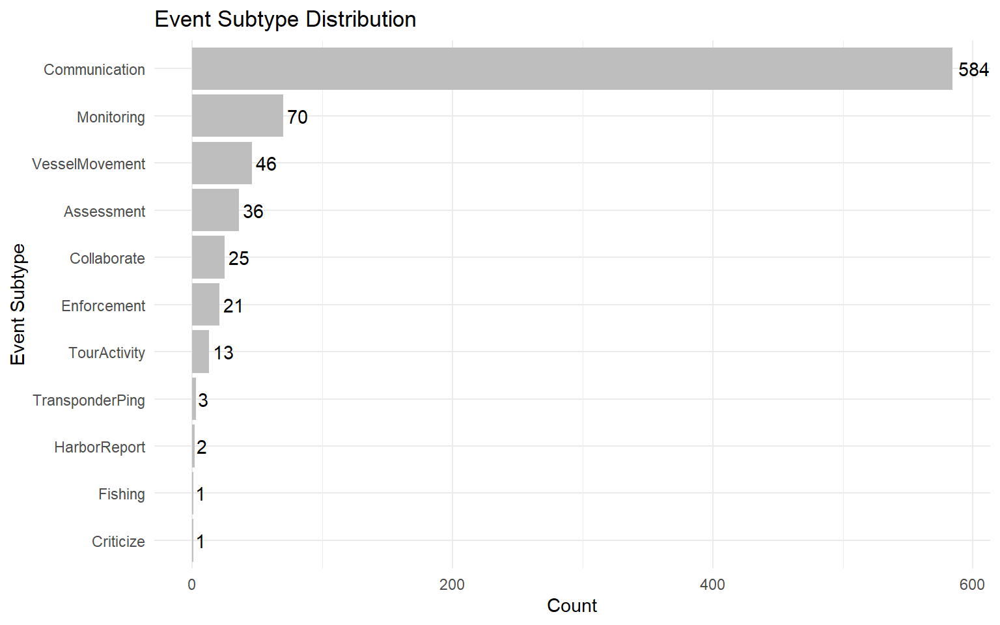
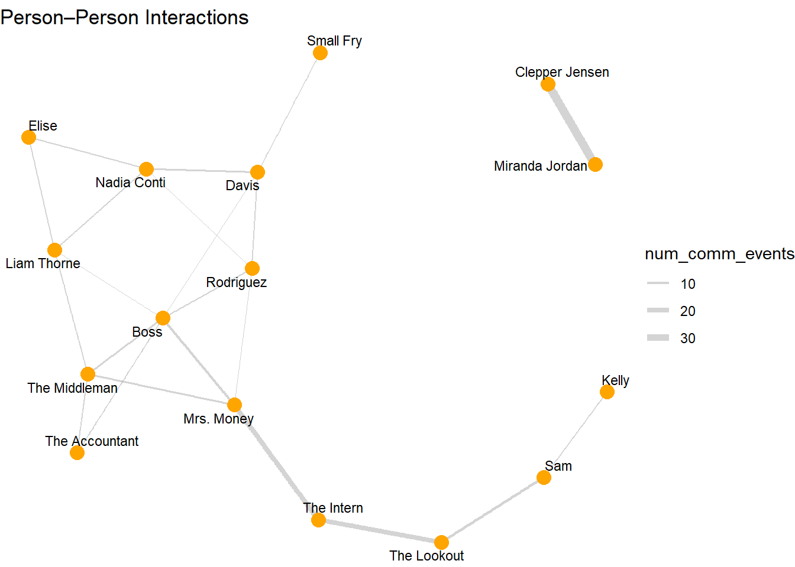
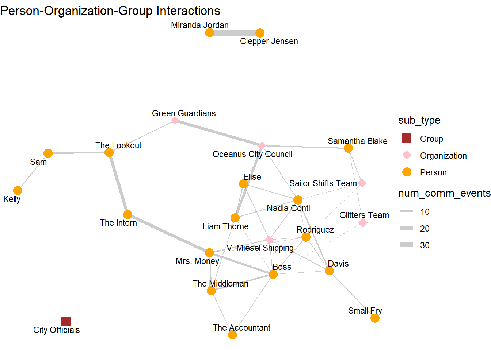
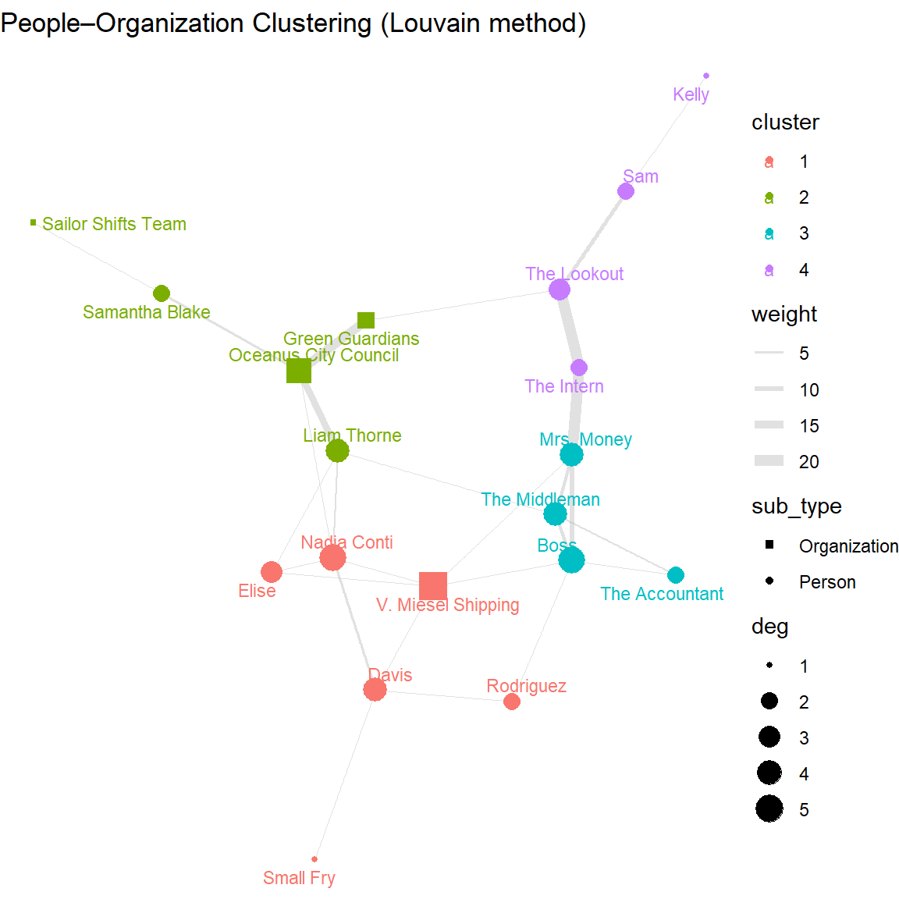
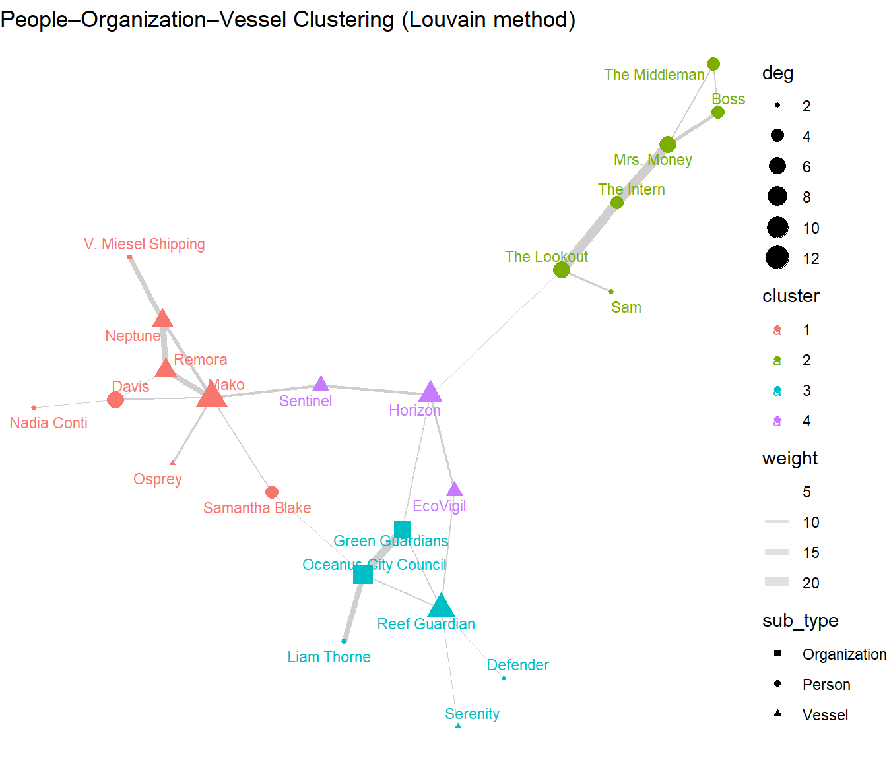

Code
pacman::p_load(tidyverse, jsonlite, dplyr, igraph,
tidygraph, ggraph, scales, visNetwork,
SmartEDA, widyr, ggforce, tidytext)Quynh Trang Do
May 28, 2025
May 31, 2025
In this exercise, I will tackle Question 2 from Mini-Challenge 3 of the VAST Challenge 2025.
Question 2: Clepper has noticed that people often communicate with (or about) the same people or vessels, and that grouping them together may help with the investigation. Use visual analytics to help Clepper understand and explore the interactions and relationships between vessels and people in the knowledge graph. Are there groups that are more closely associated? If so, what are the topic areas that are predominant for each group?
The dataset, MC3_graph.json, is a directed knowledge graph constructed from transcripts of boat radio communications. It aims to capture interactions between people, their roles, and the events and locations they discuss, ultimately supporting the prediction of when and where future events may occur.
The graph contains 1,159 nodes and 3,226 edges, and is stored in JSON format. Full description of node attributes and edge attributes is shown below.


List of 5
$ directed : logi TRUE
$ multigraph: logi FALSE
$ graph :List of 4
..$ mode : chr "static"
..$ edge_default: Named list()
..$ node_default: Named list()
..$ name : chr "VAST_MC3_Knowledge_Graph"
$ nodes :'data.frame': 1159 obs. of 31 variables:
..$ type : chr [1:1159] "Entity" "Entity" "Entity" "Entity" ...
..$ label : chr [1:1159] "Sam" "Kelly" "Nadia Conti" "Elise" ...
..$ name : chr [1:1159] "Sam" "Kelly" "Nadia Conti" "Elise" ...
..$ sub_type : chr [1:1159] "Person" "Person" "Person" "Person" ...
..$ id : chr [1:1159] "Sam" "Kelly" "Nadia Conti" "Elise" ...
..$ timestamp : chr [1:1159] NA NA NA NA ...
..$ monitoring_type : chr [1:1159] NA NA NA NA ...
..$ findings : chr [1:1159] NA NA NA NA ...
..$ content : chr [1:1159] NA NA NA NA ...
..$ assessment_type : chr [1:1159] NA NA NA NA ...
..$ results : chr [1:1159] NA NA NA NA ...
..$ movement_type : chr [1:1159] NA NA NA NA ...
..$ destination : chr [1:1159] NA NA NA NA ...
..$ enforcement_type : chr [1:1159] NA NA NA NA ...
..$ outcome : chr [1:1159] NA NA NA NA ...
..$ activity_type : chr [1:1159] NA NA NA NA ...
..$ participants : int [1:1159] NA NA NA NA NA NA NA NA NA NA ...
..$ thing_collected :'data.frame': 1159 obs. of 2 variables:
.. ..$ type: chr [1:1159] NA NA NA NA ...
.. ..$ name: chr [1:1159] NA NA NA NA ...
..$ reference : chr [1:1159] NA NA NA NA ...
..$ date : chr [1:1159] NA NA NA NA ...
..$ time : chr [1:1159] NA NA NA NA ...
..$ friendship_type : chr [1:1159] NA NA NA NA ...
..$ permission_type : chr [1:1159] NA NA NA NA ...
..$ start_date : chr [1:1159] NA NA NA NA ...
..$ end_date : chr [1:1159] NA NA NA NA ...
..$ report_type : chr [1:1159] NA NA NA NA ...
..$ submission_date : chr [1:1159] NA NA NA NA ...
..$ jurisdiction_type: chr [1:1159] NA NA NA NA ...
..$ authority_level : chr [1:1159] NA NA NA NA ...
..$ coordination_type: chr [1:1159] NA NA NA NA ...
..$ operational_role : chr [1:1159] NA NA NA NA ...
$ edges :'data.frame': 3226 obs. of 5 variables:
..$ id : chr [1:3226] "2" "3" "5" "3013" ...
..$ is_inferred: logi [1:3226] TRUE FALSE TRUE TRUE TRUE TRUE ...
..$ source : chr [1:3226] "Sam" "Sam" "Sam" "Sam" ...
..$ target : chr [1:3226] "Relationship_Suspicious_217" "Event_Communication_370" "Event_Assessment_600" "Relationship_Colleagues_430" ...
..$ type : chr [1:3226] NA "sent" NA NA ...The code chunk below is used to convert values in id field into character data type, exclude records with ID value are NA, exclude records with similar ID values, exclude thing_collected field, and save the cleaned tibble dataframe into a new tibble datatable called mc3_nodes_cleaned.
The code chunk below is used to rename source and target fields to from_id and to_id respectively, convert values in from_id and to_id fields to character data type, exclude values in from_id and to_id which not found in the id field of mc3_nodes_cleaned, exclude records whereby from_id and/or to_id values are missing, and save the cleaned tibble dataframe and called it mc3_edges_cleaned.
Next, create mapping of character id in mc3_nodes_cleaned to row index.
Next, join and convert from_id and to_id to integer indices. At the same time, drop rows with unmatched nodes.
Next, subset nodes to only those referenced by edges.
Then, rebuild lookup from old index to new index.
Finally, update edge indices to match new node table.
mc3_nodes_final %>%
filter(type == "Entity") %>%
count(sub_type, sort = TRUE) %>%
ggplot(aes(x = reorder(sub_type, n), y = n)) +
geom_col(fill = "skyblue") +
geom_text(aes(label = n), hjust = -0.2) +
coord_flip() +
labs(title = "Entity Subtype Distribution",
x = "Entity Subtype", y = "Count") +
theme_minimal()
mc3_nodes_final %>%
filter(type == "Event") %>%
count(sub_type, sort = TRUE) %>%
ggplot(aes(x = reorder(sub_type, n), y = n)) +
geom_col(fill = "grey") +
geom_text(aes(label = n), hjust = -0.2) +
coord_flip() +
labs(title = "Event Subtype Distribution",
x = "Event Subtype", y = "Count") +
theme_minimal()
This section focuses on exploring the relationships among involved individuals, organizations, and vessels.
To explore social and operational connections among individuals in the Oceanus community, a network visualization is constructed to represent person-to-person relationships mediated by relationship-type nodes. The process involves the following steps:
Identifying Relationship Nodes
Nodes labeled as “Relationship” are extracted from the cleaned graph data and split into two categories:
Undirected relationships: Types like “Friends” and “Colleagues” which imply mutual connection.
Directed relationships: All other types (e.g., “Manager”, “Employee”, “Superior”), which imply directional links.
Constructing Undirected and Directed Person–Person Edges
For undirected relationships, a table is built to capture all people connected to the same relationship node. These are paired using self-joins to create mutual (bidirectional) person-to-person links.
For directed relationships, the graph schema supports a two-step link: a person connects to a relationship node, which then connects to another person. These are joined to create directed edges between people, preserving the direction implied by the intermediate relationship node.
node_lookup <- mc3_nodes_final %>% select(new_index, sub_type, name)
edges_labeled <- mc3_edges_final %>%
left_join(node_lookup, by = c("from" = "new_index")) %>%
rename(from_type = sub_type, from_name = name) %>%
left_join(node_lookup, by = c("to" = "new_index")) %>%
rename(to_type = sub_type, to_name = name)
# Create non-directional relationships
nondir_rel_ids <- mc3_nodes_final %>%
filter(type == "Relationship", sub_type %in% c("Friends", "Colleagues")) %>%
pull(new_index)
# Get all Entity → Relationship edges (where Entity is a Person)
nondir_links <- edges_labeled %>%
filter(from_type == "Person", to %in% nondir_rel_ids) %>%
transmute(person = from, rel = to) %>%
distinct()
# Pair up people connected to the same relationship
pp_rel_pairs_nondir <- nondir_links %>%
inner_join(nondir_links, by = "rel") %>%
filter(person.x != person.y) %>%
distinct(rel, from = person.x, to = person.y)
# Create directional relationships
dir_rel_ids <- mc3_nodes_final %>%
filter(type == "Relationship", !sub_type %in% c("Friends", "Colleagues")) %>%
pull(new_index)
# From person to relationship
pr_links <- edges_labeled %>%
filter(from_type == "Person", to %in% dir_rel_ids) %>%
transmute(person = from, rel = to)
# From relationship to another person
rp_links <- edges_labeled %>%
filter(from %in% dir_rel_ids, to_type == "Person") %>%
transmute(rel = from, person = to)
pp_rel_pairs_dir <- inner_join(pr_links, rp_links, by = "rel") %>%
filter(person.x != person.y) %>%
distinct(rel, from = person.x, to = person.y)Combining and Preparing Network Data
Both undirected and directed edges are combined into a unified edge list, annotated with a direction label.
The relevant subset of nodes (people and relationships involved in these edges) is extracted and labeled with types and visual styles:
Persons were represented as orange dots.
Relationship nodes were represented as sky-blue boxes.
Network Visualization
The graph’s rendered using the visNetwork package in R. Arrows indicate direction of relationships (where applicable).
Node interaction features are added:
Hovering highlights connected nodes.
A drop-down menu allows selection of specific person nodes.
A legend was added to clarify node types and styling.
rel_nodes <- mc3_nodes_final %>%
filter(type == "Relationship") %>%
select(new_index, rel_subtype = sub_type)
rel_ids <- rel_nodes$new_index
# Combine both types of relationship
pp_rel_pairs_nondir <- pp_rel_pairs_nondir %>%
mutate(direction = "undirected")
pp_rel_pairs_dir <- pp_rel_pairs_dir %>%
mutate(direction = "directed")
pp_rel_pairs <- bind_rows(pp_rel_pairs_nondir, pp_rel_pairs_dir)
# Prepare network data
used_ids <- unique(c(pp_rel_pairs$from, pp_rel_pairs$to, pp_rel_pairs$rel))
nodes_tbl <- mc3_nodes_final %>%
filter(new_index %in% used_ids) %>%
mutate(type = if_else(new_index %in% rel_ids, "Relationship", "Person")) %>%
select(node_id = new_index, label, type) %>%
mutate(row_id = row_number())
id_map <- nodes_tbl %>% select(node_id, row_id)
edges_vis <- bind_rows(
# Person → Relationship
pp_rel_pairs %>%
left_join(id_map, by = c("from" = "node_id")) %>% rename(from_id = row_id) %>%
left_join(id_map, by = c("rel" = "node_id")) %>% rename(to_id = row_id) %>%
transmute(from = from_id, to = to_id),
# Relationship → Person
pp_rel_pairs %>%
left_join(id_map, by = c("rel" = "node_id")) %>% rename(from_id = row_id) %>%
left_join(id_map, by = c("to" = "node_id")) %>% rename(to_id = row_id) %>%
transmute(from = from_id, to = to_id)
)
# Visualize
vis_nodes <- nodes_tbl %>%
transmute(
id = row_id,
label = label,
group = type,
shape = if_else(type == "Person", "dot", "box"),
color = if_else(type == "Person", "orange", "skyblue")
)
vis_edges <- edges_vis %>%
distinct() %>%
mutate(arrows = "to", color = "gray")
visNetwork(vis_nodes, vis_edges) %>%
visNodes(font = list(size = 18)) %>%
visEdges(smooth = FALSE) %>%
visOptions(
highlightNearest = list(enabled = TRUE, degree = 2, hover = TRUE),
# restrict ID selection to Person nodes only
nodesIdSelection = list(
enabled = TRUE,
values = vis_nodes %>% filter(group == "Person") %>% pull(id)
)
) %>%
visLayout(randomSeed = 1234) %>%
visLegend(
addNodes = data.frame(
label = c("Person", "Relationship"),
shape = c("dot", "box"),
color = c("orange", "skyblue")
),
useGroups = FALSE,
position = "right"
)To identify key individuals within the communication network, I compute four standard network centrality metrics for all Person nodes:
Degree centrality: Measures the number of direct connections a node has, indicating activity level.
Betweenness centrality: Quantifies how often a node lies on the shortest paths between others, identifying information brokers or gatekeepers.
Closeness centrality: Reflects how quickly a node can reach others in the network, showing communication efficiency.
Eigenvector centrality: Captures influence based on being connected to other highly connected nodes.
The analysis is performed using the igraph package in R, with the full graph including both Person and Relationship nodes. Centrality metrics are calculated on the full graph structure, but filtered to show results only for Person nodes.
# Step 1: Create igraph with all nodes and edges
igraph_pp <- graph_from_data_frame(
d = edges_vis,
vertices = nodes_tbl %>% select(name = row_id, label, type),
directed = TRUE
)
# Step 2: Compute centrality metrics
V(igraph_pp)$degree <- degree(igraph_pp, mode = "all")
V(igraph_pp)$betweenness <- betweenness(igraph_pp, directed = TRUE)
V(igraph_pp)$closeness <- closeness(igraph_pp, normalized = TRUE)
V(igraph_pp)$eigenvector <- eigen_centrality(igraph_pp, directed = TRUE)$vector
# Step 3: Create centrality table and filter for only Person nodes
centrality_tbl <- tibble(
id = as.integer(V(igraph_pp)$name), # row_id
name = V(igraph_pp)$label,
type = V(igraph_pp)$type,
degree = V(igraph_pp)$degree,
betweenness = V(igraph_pp)$betweenness,
closeness = V(igraph_pp)$closeness,
eigenvector = V(igraph_pp)$eigenvector
) %>%
filter(type == "Person") %>%
arrange(desc(degree))
print(centrality_tbl)# A tibble: 17 × 7
id name type degree betweenness closeness eigenvector
<int> <chr> <chr> <dbl> <dbl> <dbl> <dbl>
1 16 Boss Person 13 938. 0.217 1
2 3 Nadia Conti Person 11 876. 0.181 0.378
3 6 Davis Person 10 692. 0.202 0.596
4 1 Sam Person 8 301. 0.143 0.125
5 11 The Intern Person 8 580. 0.166 0.0599
6 14 Mrs. Money Person 8 776. 0.195 0.279
7 7 Rodriguez Person 7 362. 0.175 0.254
8 15 The Middleman Person 7 271. 0.198 0.301
9 13 The Accountant Person 6 418. 0.193 0.317
10 4 Elise Person 5 98 0.141 0.0799
11 12 The Lookout Person 5 312. 0.157 0.0190
12 2 Kelly Person 4 1 0.113 0.0397
13 9 Clepper Jensen Person 4 310. 0.160 0.00265
14 10 Miranda Jordan Person 4 120 0.162 0.000363
15 17 Small Fry Person 4 34.7 0.175 0.253
16 5 Liam Thorne Person 2 0 0.135 0.0518
17 8 Sailor Shift Person 2 0 0.146 0.0816 Insights: The centrality analysis and network visualization reveal that Boss is the most influential individual in the network, with the highest degree, betweenness, and eigenvector centrality, indicating strong connectivity and a central role in information flow. Nadia Conti and Davis also emerge as key connectors, acting as bridges between subgroups. Despite fewer direct links, The Intern and Mrs. Money exhibit high betweenness, suggesting they serve as strategic intermediaries.
To explore how individuals are connected to vessels, a tripartite network is constructed. The process began by identifying all relationship nodes and linking them to person nodes (Person → Relationship) and vessel nodes (Relationship → Vessel) using the edge table. These two-step connections are joined to form person–relationship–vessel triplets, capturing associations between people and vessels.
All involved nodes are extracted and categorized as Person, Relationship, or Vessel, with each assigned a unique row ID. These are used to build a node table (vis_nodes) with customized shapes and colors, and an edge table (vis_edges) to represent directional links.
The resulting network is visualized using the visNetwork package in R, where:
Persons appear as orange dots,
Relationships as sky-blue boxes,
Vessels as green triangles.
Interactive features allow for node highlighting and filtering, enabling intuitive exploration of how individuals may influence or interact with vessels via intermediary relationship types.
# Construct person–relationship–vessel triplet
pr_edges <- edges_labeled %>%
filter(from_type == "Person", to %in% rel_ids) %>%
transmute(person_id = from,
relationship_id = to)
vessel_ids <- mc3_nodes_final %>%
filter(sub_type == "Vessel") %>% pull(new_index)
rv_edges <- edges_labeled %>%
filter(from %in% rel_ids, to %in% vessel_ids) %>%
transmute(relationship_id = from,
vessel_id = to)
triplets <- inner_join(pr_edges, rv_edges, by = "relationship_id")
all_ids <- unique(c(triplets$person_id,
triplets$relationship_id,
triplets$vessel_id))
# Node table
rel_tbl <- mc3_nodes_final %>%
filter(new_index %in% all_ids) %>%
mutate(type = case_when(
new_index %in% vessel_ids ~ "Vessel",
new_index %in% rel_ids ~ "Relationship",
TRUE ~ "Person"
)) %>%
select(index = new_index, label, type) %>%
distinct() %>%
arrange(index) %>%
mutate(row_id = row_number())
id_map <- rel_tbl %>% select(index, row_id)
# Edge table
edges_tbl <- bind_rows(
triplets %>%
select(from = person_id, to = relationship_id),
triplets %>%
select(from = relationship_id, to = vessel_id)
) %>%
left_join(id_map, by = c("from" = "index")) %>%
rename(.from = row_id) %>%
left_join(id_map, by = c("to" = "index")) %>%
rename(.to = row_id) %>%
filter(!is.na(.from) & !is.na(.to)) %>%
transmute(from = .from, to = .to)
# Visualize
vis_nodes <- rel_tbl %>%
transmute(
id = row_id,
label = label,
group = type,
shape = case_when(
type == "Person" ~ "dot",
type == "Relationship"~ "box",
type == "Vessel" ~ "triangle"
),
color = case_when(
type == "Person" ~ "orange",
type == "Relationship"~ "skyblue",
type == "Vessel" ~ "forestgreen"
)
)
vis_edges <- edges_tbl %>%
transmute(
from = from,
to = to,
arrows = "to",
color = "gray"
)
visNetwork(vis_nodes, vis_edges) %>%
visNodes(font = list(size = 20)) %>%
visEdges(smooth = FALSE) %>%
visOptions(highlightNearest = list(enabled = TRUE, degree = 2, hover = TRUE), nodesIdSelection = TRUE) %>%
visLayout(randomSeed = 123) %>%
visLegend(addNodes = data.frame(
label = c("Person", "Relationship", "Vessel"),
shape = c("dot", "box", "triangle"),
color = c("orange", "skyblue", "forestgreen")
), useGroups = FALSE)Insights: The Person–Relationship–Vessel network visualization reveals a tightly interconnected operational structure centered around key individuals. Davis and Rodriguez emerge as central figures, each linked to multiple vessels through “Operates” and “Coordinates” relationships, suggesting they play pivotal roles in managing or overseeing maritime activities. Vessels such as Remora, Sentinel, Neptune, and Mako form the core of this network, with multiple people connected to each—indicative of shared usage and coordinated operations. While most links are operational, a few “Suspicious” relationships—such as those involving Defender and Knowles—highlight potential vessels of concern. Notably, individuals like Boss, Clepper Jensen, and Nadia Conti are connected to only one vessel or relationship, indicating they may be responsible for more high-level or strategic roles. Overall, the structure suggests a coordinated network with central command figures, key vessels, and isolated links that may warrant further investigation.
This analysis focuses solely on communication events between entities to identify patterns of frequent interaction.
The process begins by identifying all edges linking Persons and Communication events. From this, all possible pairs of people who appear in the same communication event are extracted. To avoid duplication and self-pairs, only distinct pairs with different individuals are retained.
The number of times each person-pair co-occurs in communication events is then counted, forming a weighted edge list (num_comm_events). To standardize the order of pairs, names are alphabetically sorted within each row.
These person pairs are used to build a graph where:
Nodes represent individuals,
Edges represent the frequency of shared communication events,
Edge width is scaled by the number of co-occurrences.
The resulting network is visualized using ggraph, providing insight into the structure of interpersonal communication patterns.
pp_comm <- edges_labeled %>%
filter((from_type == "Person" & to_type == "Communication") |
(from_type == "Communication" & to_type == "Person")) %>%
transmute(person = if_else(from_type == "Person", from_name, to_name),
comm_id = if_else(from_type == "Communication", from, to))
person_pairs <- pp_comm %>%
inner_join(pp_comm, by = "comm_id") %>%
filter(person.x != person.y) %>%
count(person.x, person.y, name = "num_comm_events") %>% # ← new column name
rowwise() %>%
mutate(p1 = min(person.x, person.y),
p2 = max(person.x, person.y)) %>%
ungroup() %>%
select(from = p1, to = p2, num_comm_events) %>%
distinct()
person_pairs %>%
arrange(desc(num_comm_events)) %>%
print(n = 10)# A tibble: 22 × 3
from to num_comm_events
<chr> <chr> <int>
1 Clepper Jensen Miranda Jordan 38
2 Mrs. Money The Intern 20
3 The Intern The Lookout 20
4 Boss Mrs. Money 10
5 Sam The Lookout 8
6 Boss The Middleman 7
7 Mrs. Money The Middleman 6
8 Davis Nadia Conti 5
9 Liam Thorne Nadia Conti 4
10 The Accountant The Middleman 4
# ℹ 12 more rowspp_nodes <- tibble(name = unique(c(person_pairs$from, person_pairs$to)))
id_lkp <- pp_nodes %>% mutate(row_id = row_number())
pp_edges_final <- person_pairs %>%
left_join(id_lkp %>% rename(from_id = row_id), by = c("from" = "name")) %>%
left_join(id_lkp %>% rename(to_id = row_id), by = c("to" = "name")) %>%
select(from = from_id, to = to_id, num_comm_events)
set.seed(42)
ggraph(tbl_graph(nodes = pp_nodes, edges = pp_edges_final, directed = FALSE),
layout = "fr") +
geom_edge_link(aes(width = num_comm_events), alpha = 0.5, color = "darkgrey") +
geom_node_point(color = "orange", size = 4) +
geom_node_text(aes(label = name), repel = TRUE, size = 3) +
scale_edge_width(range = c(0.3, 2.5)) +
theme_void() +
labs(title = "Person–Person Interactions")
Insights: The person-to-person communication network reveals several high-frequency interaction pairs, with Clepper Jensen and Miranda Jordan—both mentioned in the case as investigators—sharing the most communication events (38). A secondary cluster features Mrs. Money, The Intern, and The Lookout, who are tightly linked through repeated communications, potentially indicating a shared operational or covert role. Boss emerges as a central figure, engaging with both Mrs. Money and The Middleman, and likely playing a coordinating or supervisory role. Additional patterns show Nadia Conti frequently contacted by both Davis and Liam Thorne, while The Middleman serves as a common contact for multiple individuals.
This analysis constructs a network to explore how people, organizations, and groups interact based on their co-occurrence in communication events.
The process begins by identifying all edges that connect an entity (either a Person, Organization, or Group) to a Communication event. Both directions are considered to capture all valid interactions.
Next, for each communication event, all unique pairs of co-occurring entities are generated. The number of shared communication events between each pair is counted, forming a weighted edge list.
Each unique entity is recorded as a node and labeled with its type (Person, Organization, or Group). A numeric ID is assigned to each node for graph construction. The entity pairs and node list are joined to create a graph-compatible edge table with numeric references.
The resulting network is visualized using ggraph, where:
Edge width reflects the frequency of shared communications.
Node color and shape represent entity type: orange circles for Persons, purple diamonds for Organizations, and brown squares for Groups.
The Fruchterman–Reingold layout emphasizes structural proximity between frequently co-occurring entities.
# Step 1: Get all Entity–Communication edges (Person, Organization, Group)
entity_comm <- edges_labeled %>%
filter((from_type %in% c("Person", "Organization", "Group") & to_type == "Communication") |
(from_type == "Communication" & to_type %in% c("Person", "Organization", "Group"))) %>%
transmute(
entity = if_else(from_type %in% c("Person", "Organization", "Group"), from_name, to_name),
comm_id = if_else(from_type == "Communication", from, to),
entity_type = if_else(from_type %in% c("Person", "Organization", "Group"), from_type, to_type)
)
# Step 2: Create all entity–entity pairs that co-occur in the same communication event
entity_pairs <- entity_comm %>%
inner_join(entity_comm, by = "comm_id") %>%
filter(entity.x != entity.y) %>%
count(entity.x, entity.y, name = "num_comm_events") %>%
rowwise() %>%
mutate(p1 = min(entity.x, entity.y),
p2 = max(entity.x, entity.y)) %>%
ungroup() %>%
select(from = p1, to = p2, num_comm_events) %>%
distinct()
# Step 3: Create node table with type info
node_types <- entity_comm %>%
select(name = entity, sub_type = entity_type) %>%
distinct()
network_nodes <- entity_comm %>%
distinct(name = entity, sub_type = entity_type) %>%
arrange(name) %>%
mutate(row_id = row_number())
id_lkp <- network_nodes %>% select(name, row_id)
# Step 4: Build edge table with numeric IDs
network_edges <- entity_pairs %>%
left_join(id_lkp %>% rename(from_id = row_id), by = c("from" = "name")) %>%
left_join(id_lkp %>% rename(to_id = row_id), by = c("to" = "name")) %>%
select(from = from_id, to = to_id, num_comm_events)
# Step 5: Plot the network with ggraph
set.seed(42)
ggraph(tbl_graph(nodes = network_nodes, edges = network_edges, directed = FALSE),
layout = "fr") +
geom_edge_link(aes(width = num_comm_events), alpha = 0.5, color = "grey60") +
geom_node_point(aes(color = sub_type, shape = sub_type), size = 4) +
geom_node_text(aes(label = name), repel = TRUE, size = 3) +
scale_edge_width(range = c(0.3, 3)) +
scale_color_manual(values = c(
Person = "orange",
Organization = "pink",
Group = "brown"
)) +
scale_shape_manual(values = c(
Person = 19,
Organization = 18,
Group = 15
)) +
theme_void() +
labs(title = "Person-Organization-Group Interactions")
Insights: The network reveals a densely connected core of individuals and organizations, suggesting coordinated activity across multiple entities. V-Miesel Shipping appears central, linked to individuals such as Boss, Mrs. Money, Rodriguez, and The Middleman, indicating a potential hub for operational or logistical coordination. Oceanus City Council and Green Guardians also serve as prominent intermediaries, connecting civic actors like Samantha Blake, Liam Thorne, and The Lookout. Nadia Conti stands out as a central bridge across these clusters, linking both activist-aligned and logistics-aligned individuals.
A notable observation is the presence of only one Group node — “City Officials” — which is completely disconnected from the rest of the network. This suggests that, although the entity exists in the data, it did not participate in any communication event involving the individuals or organizations present in this chart.
In this stage, an interactive network visualization is constructed to explore communication-based relationships among people, vessels, and organizations. The process begins with extracting communication links between each entity type and communication events. From these, co-occurrence pairs are formed—entities that appeared together in the same communication event—counted, and converted into a weighted edge list. A node table is created with entity names and types. Using tidygraph, a network graph object is built, and centrality metrics (degree, betweenness, closeness, eigenvector) are computed to assess influence and positioning within the network. Finally, visNetwork is used to generate an interactive plot where node size reflects degree centrality, tooltip text displays all metrics, and nodes are colored and shaped based on their type (person, vessel, or organization). This allows for intuitive exploration of key actors and communication patterns.
# Build Communication tables
pc <- edges_labeled %>%
filter((from_type == "Person" & to_type == "Communication") |
(from_type == "Communication" & to_type == "Person")) %>%
transmute(entity = if_else(from_type == "Person", from_name, to_name),
comm = if_else(from_type == "Person", to, from),
type = "Person")
vc <- edges_labeled %>%
filter((from_type == "Vessel" & to_type == "Communication") |
(from_type == "Communication" & to_type == "Vessel")) %>%
transmute(entity = if_else(from_type == "Vessel", from_name, to_name),
comm = if_else(from_type == "Vessel", to, from),
type = "Vessel")
oc <- edges_labeled %>%
filter((from_type == "Organization" & to_type == "Communication") |
(from_type == "Communication" & to_type == "Organization")) %>%
transmute(entity = if_else(from_type == "Organization", from_name, to_name),
comm = if_else(from_type == "Organization", to, from),
type = "Organization")
entity_comm <- bind_rows(pc, vc, oc)
# Pairwise co-occurrences
edges_raw <- entity_comm %>%
inner_join(entity_comm, by = "comm", suffix = c("_a", "_b")) %>%
filter(entity_a != entity_b) %>%
mutate(pair_id = map2_chr(entity_a, entity_b, ~ paste(sort(c(.x, .y)), collapse = "||"))) %>%
count(pair_id, entity_a, entity_b, name = "weight")
# Node table
nodes_tbl <- entity_comm %>%
distinct(name = entity, sub_type = type) %>%
mutate(row_id = row_number())
# Edge table
id_lkp <- nodes_tbl %>% select(name, row_id)
edges_final <- edges_raw %>%
left_join(id_lkp, by = c("entity_a" = "name")) %>% rename(from = row_id) %>%
left_join(id_lkp, by = c("entity_b" = "name")) %>% rename(to = row_id) %>%
select(from, to, weight)
full_graph <- tbl_graph(nodes = nodes_tbl, edges = edges_final, directed = FALSE) %>%
mutate(
degree = centrality_degree(),
betweenness = centrality_betweenness(),
closeness = centrality_closeness(),
eigen = centrality_eigen()
)
# Visualize
vis_nodes <- full_graph %>%
as_tibble() %>%
mutate(
id = row_number(),
label = name,
value = scales::rescale(degree, to = c(5, 25)), # Size by degree
group = sub_type,
color = case_when(
sub_type == "Person" ~ "orange",
sub_type == "Vessel" ~ "forestgreen",
sub_type == "Organization" ~ "pink",
TRUE ~ "lightgray"
),
shape = case_when(
sub_type == "Person" ~ "dot",
sub_type == "Vessel" ~ "triangle",
sub_type == "Organization" ~ "box",
TRUE ~ "ellipse"
),
title = paste0(
"<b>", name, "</b><br>",
"Degree: ", degree, "<br>",
"Betweenness: ", round(betweenness, 2), "<br>",
"Closeness: ", round(closeness, 3), "<br>",
"Eigenvector: ", round(eigen, 3)
)
) %>%
select(id, label, group, shape, color, value, title)
vis_edges <- edges_final %>%
mutate(arrows = "none", color = "gray") %>%
distinct()
visNetwork(vis_nodes, vis_edges) %>%
visNodes(font = list(size = 16)) %>%
visEdges(smooth = FALSE) %>%
visOptions(
highlightNearest = list(enabled = TRUE, degree = 1, hover = TRUE),
nodesIdSelection = TRUE
) %>%
visLayout(randomSeed = 42) %>%
visLegend(addNodes = data.frame(
label = c("Person", "Vessel", "Organization"),
shape = c("dot", "triangle", "box"),
color = c("orange", "forestgreen", "pink")
), useGroups = FALSE, position = "right")Insights: This network map illustrates the complex web of communication and co-occurrence among individuals, vessels, and organizations. At the center is a densely connected cluster revolving around vessels such as Mako, Remora, Reef Guardian, and Neptune, suggesting these are frequent topics of discussion.
Highly connected individuals like Nadia Conti, Boss, Davis, and Mrs. Money, along with key organizations such as the Oceanus City Council and Green Guardians, play prominent roles—consistent with their high degree and betweenness centrality observed earlier. In contrast, individuals like Sam, Kelly, and The Lookout appear on the network’s periphery, linked to the core through only one or two connections, indicating more isolated or limited involvement.
To better understand the structure of interactions, I conducted two clustering analyses based on communication frequency. The first focused on Person–Organization communication, revealing how individuals cluster around formal entities they frequently communicate with. The second included Vessels to capture broader patterns, highlighting how people and organizations group around frequently discussed or engaged vessels. By comparing both, we can distinguish between clusters formed through institutional communication and those shaped by shared operational or topical focus.
This analysis aims to identify clusters of people and organizations that frequently co-occur in communication events. The process begins by filtering the edges to retain only those pairs that have interacted at least twice, ensuring meaningful connections. A graph is then constructed and restricted to its largest connected component to focus on the primary network structure. Centrality metrics (degree, betweenness, eigenvector) are computed to assess node influence. Louvain clustering is applied using edge weights (number of shared communication events) to detect densely connected communities. The resulting network is visualized with node size indicating degree centrality and color representing cluster membership.
# Step 1: Filter edges with sufficient communication events
network_filtered <- network_edges %>%
filter(num_comm_events >= 2)
# Step 2: Create graph
pp_graph <- tbl_graph(nodes = network_nodes,
edges = network_filtered,
directed = FALSE) %>%
activate(edges) %>%
mutate(weight = num_comm_events)
# Step 3: Filter to largest connected component
pp_graph <- pp_graph %>%
activate(nodes) %>%
filter(!node_is_isolated()) %>%
mutate(comp = group_components()) %>%
filter(comp == which.max(table(comp)))
# Step 4: Compute centrality + clustering
pp_graph <- pp_graph %>%
activate(nodes) %>%
mutate(
cluster = as_factor(group_louvain(weights = weight)),
deg = centrality_degree(),
betw = centrality_betweenness(),
eig = centrality_eigen()
)
# Step 5: Plot with different shapes for Person vs Organization
set.seed(1234)
ggraph(pp_graph, layout = "fr") +
geom_edge_link(aes(width = weight), colour = "grey70", alpha = 0.4) +
geom_node_point(aes(colour = cluster, size = deg, shape = sub_type)) +
geom_node_text(aes(label = name, colour = cluster), repel = TRUE, size = 3) +
scale_shape_manual(values = c(
Person = 16, # circle
Organization = 15 # square
)) +
scale_edge_width(range = c(0.2, 2.5)) +
theme_void() +
labs(title = "People–Organization Clustering (Louvain method)")
Insights: The Louvain clustering reveals four distinct communities of people and organizations based on shared communication events:
Cluster 1 (Red): Comprising Nadia Conti, Davis, Elise, and V. Miesel Shipping, this group appears to be closely connected, potentially involved in operational or logistical discussions.
Cluster 2 (Green): Includes Oceanus City Council, Green Guardians, Samantha Blake, and Sailor Shifts Team, suggesting a coalition focused on environmental or public affairs.
Cluster 3 (Blue): Formed by The Lookout, The Intern, Sam, and Kelly, this cluster is more peripheral but tightly knit—possibly playing an observational or low-influence role.
Cluster 4 (Purple): Consisting of Boss, Mrs. Money, The Middleman, and The Accountant, this group may represent organizational or administrative coordination within the broader network.
Notably, Liam Thorne and Mrs. Money serve as key connectors, bridging multiple clusters and facilitating cross-group communication. In terms of centrality, The Intern, Mrs. Money, and Nadia Conti stand out as the most well-connected individuals, indicating their critical roles in the network’s information flow.
The second network graph is constructed to uncover clusters of people, organizations, and vessels that frequently co-occur in communication events. First, only strong connections—those with five or more shared communication events are retained to ensure meaningful interactions. A graph is then built and filtered to include only the largest connected component, focusing the analysis on the most relevant part of the network. Louvain clustering is applied using edge weights to detect community structures, while centrality metrics (degree, betweenness, eigenvector) are computed to identify influential entities. The resulting network is visualized with node size representing degree centrality and color indicating cluster membership, revealing key actors and tightly-knit groups in the communication ecosystem.
# Step 1: Filter edges with sufficient communication events
edges_filtered <- edges_final %>%
filter(weight >= 5)
# Step 2: Create graph
entity_graph <- tbl_graph(nodes = nodes_tbl,
edges = edges_filtered,
directed = FALSE) %>%
activate(edges) %>%
mutate(weight = weight)
# Step 3: Filter to largest connected component
entity_graph <- entity_graph %>%
activate(nodes) %>%
filter(!node_is_isolated()) %>%
mutate(comp = group_components()) %>%
filter(comp == which.max(table(comp)))
# Step 4: Compute centrality + clustering
entity_graph <- entity_graph %>%
activate(nodes) %>%
mutate(
cluster = as_factor(group_louvain(weights = weight)),
deg = centrality_degree(),
betw = centrality_betweenness(),
eig = centrality_eigen()
)
# Step 5: Plot with shape by sub_type
set.seed(1234)
ggraph(entity_graph, layout = "fr") +
geom_edge_link(aes(width = weight), colour = "grey70", alpha = 0.4) +
geom_node_point(aes(colour = cluster, size = deg, shape = sub_type)) +
geom_node_text(aes(label = name, colour = cluster), repel = TRUE, size = 3) +
scale_shape_manual(values = c(
Person = 16, # circle
Organization = 15, # square
Vessel = 17 # triangle
)) +
scale_edge_width(range = c(0.2, 2.5)) +
theme_void() +
labs(title = "People–Organization–Vessel Clustering (Louvain method)")
Insights: The inclusion of vessels reveals distinct communication clusters centered around frequently mentioned ships and their associated entities.
Cluster 1 (Red) is dominated by vessels like Mako, Remora, Neptune, and V. Miesel Shipping, alongside individuals like Davis and Nadia Conti. This suggests a group engaged in operational or shipping-related discussions.
Cluster 2 (Green) consists entirely of individuals including Mrs. Money, The Intern, The Middleman, and Boss—likely representing a coordinated team, possibly administrative or managerial.
Cluster 3 (Blue) centers on Green Guardians, Oceanus City Council, and vessels like Reef Guardian, indicating an environmental or civic coalition involving both institutions and ships.
Cluster 4 (Purple) consists entirely of 3 vessels Sentinel, Horizon, and EcoVigil. This suggests the cluster represents a group of vessels that are frequently discussed together or are involved in similar communication contexts.